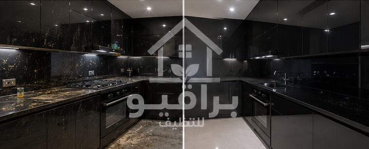
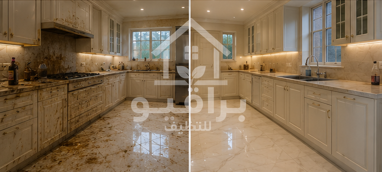
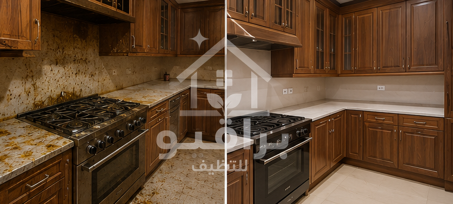
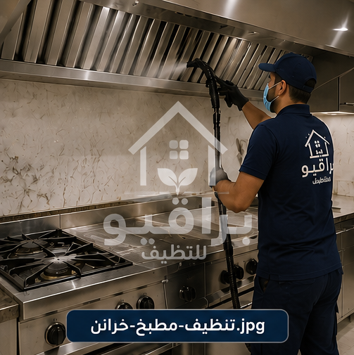
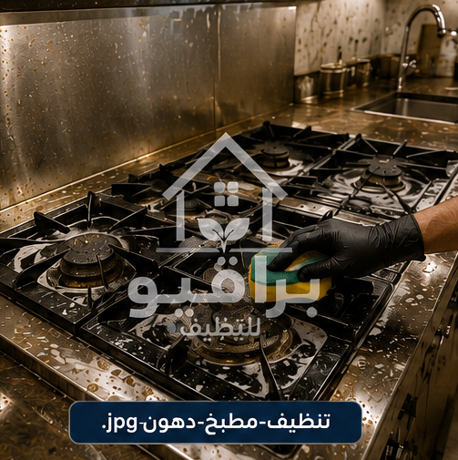
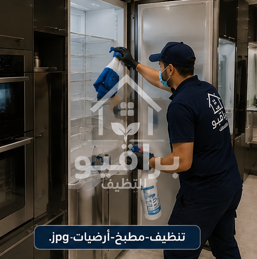
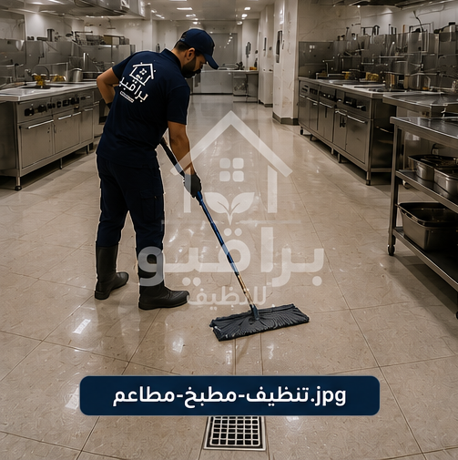
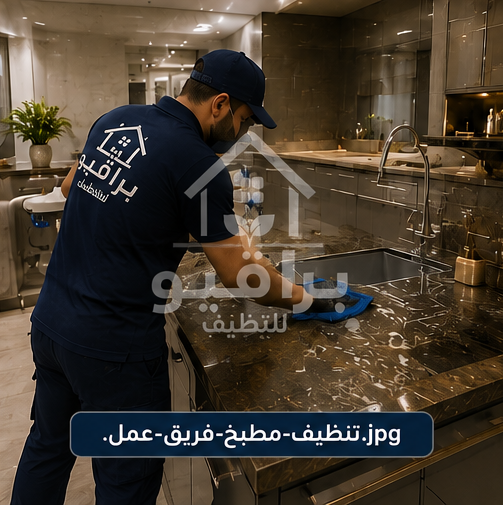
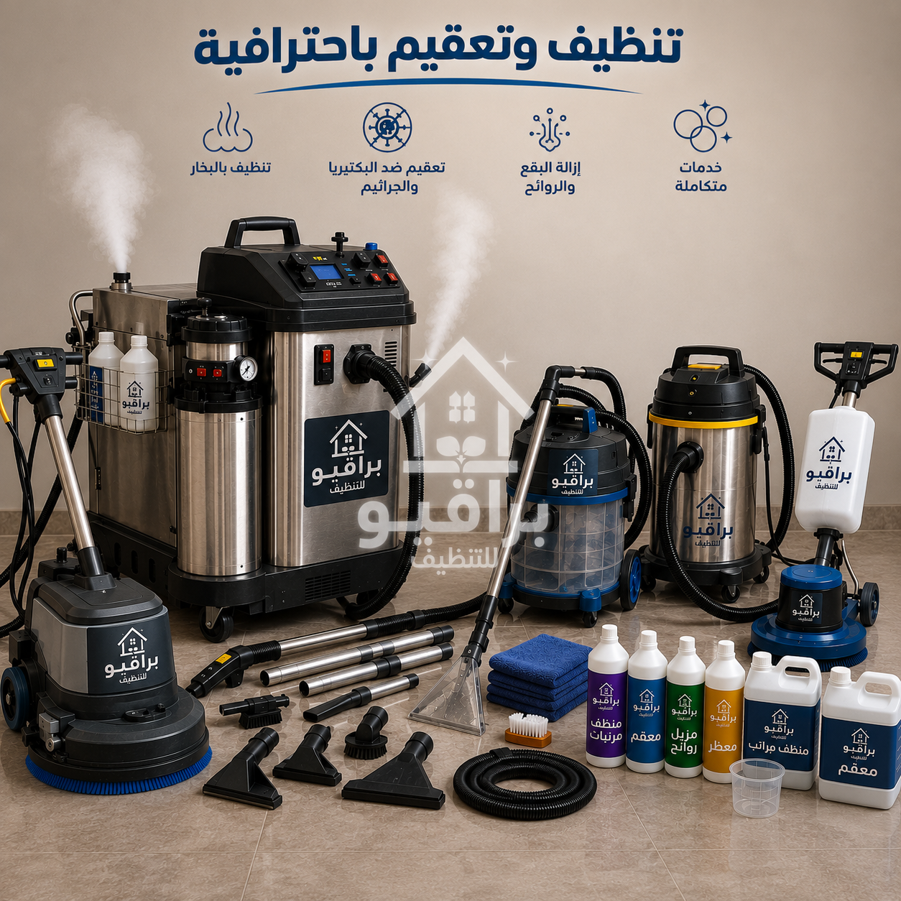

مقدمة
يُعد تنظيف المطابخ بالرياض من الخدمات الأساسية للحفاظ على بيئة نظيفة وصحية داخل المنزل أو المنشأة. فمع الاستخدام اليومي للمطبخ في إعداد الوجبات، تتراكم الدهون والأبخرة وبقايا الطهي على الأسطح والخزائن والأجهزة، وقد يصبح تنظيفها أكثر صعوبة مع مرور الوقت. كما أن طبيعة الأجواء في مدينة الرياض، وما يصاحبها من غبار وأتربة، تؤدي إلى التصاق الأتربة بالدهون، مما يجعل المطبخ يحتاج إلى تنظيف احترافي بصورة دورية.
متى يحتاج المطبخ إلى تنظيف احترافي؟
- تراكم الدهون على الخزائن.
- تغير مظهر الأسطح.
- وجود بقع يصعب إزالتها.
- تراكم الأتربة في الزوايا.
- ظهور روائح غير مرغوبة.
- مرور فترة طويلة دون تنظيف عميق.

قبل وبعد التنظيف

قبل وبعد التنظيف

قبل وبعد التنظيف

قبل وبعد التنظيف

قبل وبعد التنظيف

قبل وبعد التنظيف

تنظيف الخزائن

إزالة الدهون

تنظيف الأرضيات

تنظيف مطابخ المطاعم

فريق العمل

المعدات
تنظيف مطابخ المنازل بالرياض
المطابخ المنزلية تحتاج إلى عناية مستمرة بسبب الاستخدام اليومي. تشمل الخدمة: تنظيف الخزائن، تنظيف الدواليب، تنظيف الرخام، تنظيف أسطح العمل، تنظيف الأحواض، تنظيف السيراميك، تنظيف الأرضيات، إزالة الدهون، إزالة البقع، تعقيم المطبخ عند الطلب.
تنظيف مطابخ الفلل
تتميز مطابخ الفلل غالبًا بالمساحات الكبيرة والتصميمات الحديثة، ولذلك يتم الاهتمام بجميع التفاصيل. وتشمل الخدمة: تنظيف المطبخ الرئيسي، تنظيف المطبخ التحضيري، تنظيف الخزائن، تنظيف الرخام، تنظيف الأجهزة من الخارج، تنظيف الأرضيات.
🍳 مطبخك محتاج تنظيف شامل؟
📱 احجز موعد الآنتنظيف مطابخ المطاعم
تحتاج المطاعم إلى مستوى عالٍ من النظافة بسبب الاستخدام المستمر. تشمل الخدمة: تنظيف أسطح التحضير، تنظيف الخزائن، تنظيف الأرضيات، إزالة الدهون، تنظيف الجدران القابلة للغسل، تنظيف الأحواض.
إزالة الدهون من المطابخ
تُعد الدهون من أكثر المشكلات شيوعًا في المطابخ، خاصة حول أماكن الطهي. وتشمل الخدمة إزالة الدهون من: الخزائن، الأبواب، الرخام، السيراميك، الأسطح، الجدران القابلة للتنظيف.
أنواع المطابخ التي نقوم بتنظيفها
- المطابخ الخشبية.
- مطابخ الألمنيوم.
- مطابخ الستانلس ستيل.
- المطابخ الحديثة.
- المطابخ الكلاسيكية.
- المطابخ المفتوحة.
- مطابخ الفلل.
- مطابخ الشقق.
- مطابخ القصور.
- مطابخ الشركات.
- مطابخ المطاعم.
خدمات تنظيف المطابخ في جميع أحياء الرياض
تقدم براقيو خدمات تنظيف المطابخ بالرياض في جميع أحياء العاصمة: حي النرجس، حي الياسمين، حي الملقا، حي العارض، حي حطين، حي الصحافة، حي الربيع، حي الملك فهد، حي العليا، حي السليمانية، حي قرطبة، حي المونسية، حي الرمال، حي القادسية، حي اليرموك، حي الروضة، حي الخليج، حي النسيم، حي الشفا، حي السويدي، حي بدر، حي العزيزية، حي ظهرة لبن، حي الدار البيضاء.
الأسئلة الشائعة
هل يمكن تنظيف جميع أنواع المطابخ؟
نعم، يتم تنظيف المطابخ الخشبية، والألمنيوم، والستانلس ستيل، وغيرها، مع اختيار الطريقة المناسبة لكل خامة.
هل تشمل الخدمة تنظيف الخزائن من الداخل؟
يمكن تنفيذ ذلك حسب طلب العميل ونطاق الخدمة المتفق عليه.
كم مرة يُنصح بتنظيف المطبخ احترافيًا؟
يفضل إجراء تنظيف شامل كل عدة أشهر، بينما يُنصح بالتنظيف اليومي للأسطح وإزالة الدهون أولًا بأول.
فريق عمل مدرب
عمالة محترفة ومدربة على أعلى مستوى
مواد آمنة
منتجات تنظيف مناسبة لجميع أنواع المطابخ
سرعة في الإنجاز
خدمة سريعة مع الالتزام بالمواعيد
ضمان الجودة
نتائج احترافية تدوم طويلاً
براقيو لخدمات تنظيف المطابخ بالرياض
إذا كنت تبحث عن أفضل شركة تنظيف مطابخ بالرياض تجمع بين الجودة والاحترافية والاهتمام بأدق التفاصيل، فإن براقيو تقدم خدمات متكاملة لتنظيف جميع أنواع المطابخ. ندرك أن المطبخ هو قلب المنزل وأكثر الأماكن استخدامًا، لذلك نحرص على تنظيف جميع أجزائه بعناية، بدءًا من الخزائن والدواليب، مرورًا بالرخام وأسطح العمل والأحواض، وصولًا إلى الأرضيات والسيراميك.
نصائح للحفاظ على المطبخ
- تنظيف أسطح العمل بعد كل استخدام.
- إزالة الدهون فور ظهورها.
- تجفيف الحوض باستمرار.
- تهوية المطبخ بشكل يومي.
- تنظيف الخزائن بصورة دورية.
- عدم ترك بقايا الطعام لفترات طويلة.
- إجراء تنظيف احترافي كل عدة أشهر.
خاتمة
يُعد تنظيف المطبخ بصورة دورية من أهم الخطوات للحفاظ على نظافة المنزل وجماله، كما يساعد على المحافظة على الخزائن والأسطح والرخام والأرضيات وإطالة عمرها. إذا كنت تبحث عن شركة متخصصة في تنظيف المطابخ بالرياض، فإن فريق براقيو جاهز لخدمتك في جميع أحياء مدينة الرياض، مع الالتزام بالمواعيد، وجودة التنفيذ، والحرص على رضا العميل.
نقدم خدمة تنظيف المكيفات في جميع أحياء الرياض: حي النرجس، حي الياسمين، حي الملقا، حي العارض، حي حطين، حي الصحافة، حي الربيع، حي الغدير، حي العقيق، حي المروج، حي الورود، حي النفل، حي الندى، حي الفلاح، حي التعاون، حي الازدهار، حي قرطبة، حي الرمال، حي المونسية، حي القادسية، حي اليرموك، حي الخليج، حي الروضة، حي إشبيلية، حي الجزيرة، حي النهضة، حي الحمراء، حي غرناطة، حي الريان، حي الربوة، حي القدس، حي الروابي، حي السويدي، حي ظهرة لبن، حي لبن، حي طويق، حي العريجاء، حي البديعة، حي شبرا، حي سلطانة، حي الشفا، حي بدر، حي العزيزية، حي الدار البيضاء، حي المنصور، حي الحزم، حي نمار، حي أحد، حي عكاظ، حي المروة، حي العليا، حي السليمانية، حي الملز، حي الفوطة، حي المربع، حي البطحاء، حي الديرة، حي السفارات.